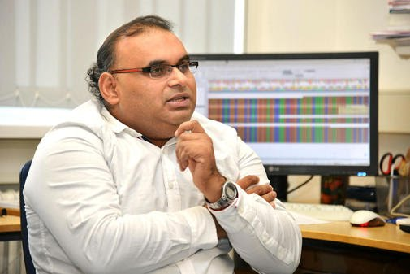

 In the local news paper: About importance of marine fungi and its role in Cancer drug production, link Currently, I am working as a research scientist at the German Cancer Research Center (DKFZ), Heidelberg, Germany. My focus is finding new biomarkers and associated genetic variants for the hereditary cancer. Previously, I was associated with the University of Kiel (CAU) on the outcomes of my previous work on the EU funded "Marine Fungi" project (FP7/KBBE.2010.3.2-01). In this project, anti-cancerous and antibiotic compounds were detected and characterized from marine fungi using high throughput methods. Several manuscripts are under revision from this work. Prior to this, I worked understanding of next generation sequencing data, implementing a pipeline for NGS, and to annotate some non-reference eukaryotic genomes such invasive species Colarado potato beetle in Biology Department at the University of Padova, Padova, Italy. I did my PhD in Bioinformatics entitled "Phylogenomics of Vertebrate Serpins" from University of Bielefeld, Germany. I worked at National Centre for Biological Sciences (NCBS), Bangalore, India as Junior Research fellow funded by Wellcome Trust, London. I did M.Sc. in Biotechnology from School of Biotechnology, Madurai Kamaraj University, Madurai, India. I have Bachelor's in Chemistry and Botany as major subjects and Zoology as minor subject from Ewing Christian College , Allahabad University, Allahabad, India. Published manuscripts – 38; Books – 2; Book Chapters - 1 H-index – 11; i10-index -14 ORCID ID - 0000-0003-4172-4059 Researchgate score 34+ at Researchgate:https://www.researchgate.net/profile/Abhishek_Kumar56 and Google Scholar: https://scholar.google.de/citations?user=8UsMIk0AAAAJ&hl=en
Top 20 research articles (* = Corresponding senior author)1. Abhishek Kumar, Henrissat, B., Syed, F., Arvas, M., Thieme, N., Benz, J., Sørensen, J.L., Record, E., Pöggeler, S. & Kempken, F.* (2015) de novo assembly and genome analyses of the marine sponge derived Scopulariopsis brevicaulis strain LF580 unravels life-style traits and anticancerous scopularide producing hybrid NRPS-PKS cluster. PLoS ONE, 10(10):e0140398, DOI:10.1371/journal.pone.0140398. (IF=4.411) 2. Abhishek Kumar, Congiu, L., Lindström, L., Piiroinen, S., Vidotto, M., & Grapputo, A.* (2014) Sequencing, de novo assembly and annotation of the Colorado potato beetle, Leptinotarsa decemlineata, transcriptome. PloS ONE 9(1): e86012. DOI:10.1371/journal.pone.0086012. (IF=4.411) 3. Abhishek Kumar*, Bhandari A, Sinha R, Sardar P, Sushma M, Goyal, P. Goswami, C. & Grapputo, A. (2012) Molecular Phylogeny of OVOL Genes Illustrates a Conserved C2H2 Zinc Finger Domain Coupled by Hypervariable Unstructured Regions. PLoS ONE, 7(6): e39399. DOI:10.1371/journal.pone.0039399. (IF=4.411) 4. Abhishek Kumar*, Bhandari, A. Sinha, R. Goyal, P. Grapputo, A. (2011) Spliceosomal Intron Insertions in Genome Compacted Ray-Finned Fishes as Evident from Phylogeny of MC Receptors, Also Supported by a Few Other GPCRs. PLoS ONE, 6(8): e22046. (IF=4.411) 5. Abhishek Kumar* (2015) Bayesian phylogeny analysis of vertebrate serpins illustrates evolutionary conservation of the intron and indels based six groups classification system from lampreys for ~500 MY. PeerJ, 3:e1026, DOI: 10.7717/peerj.1026 (IF=2.18). 6. Abhishek Kumar*, Bhandari, A., Sarde, S. J., Sekhar, M. & Tandon, R. (2015) Understanding V(D)J recombination initiator RAG1 gene using molecular phylogenetic and genetic variant analyses and upgrading missense and non-coding variants of clinical importance. Biochem. Biophys. Res. Commun. 462(4):301-13, DOI: 10.1016/j.bbrc.2015.04.125. (IF=2.371) 7. Abhishek Kumar*, Bhandari, A., Krishnaswamy, S. (2015). Sequence and Structural Perspectives of bacterial β-Stranded Porins. Proteins & Peptide Letters, 22(1), 8–22. DOI: 10.2174/0929866521666140827110755 (IF=1.99). 8. Abhishek Kumar*, Bhandari, A., & Goswami, C. (2014). Surveying genetic variants and molecular phylogeny of cerebral cavernous malformation gene, CCM3/PDCD10. Biochem. Biophys. Res. Commun., 455(5), 98–106. DOI: 10.1016/j.bbrc.2014.10.105. (IF=2.371) 9. Abhishek Kumar*, Bhandari, A., Sarde, S. J., & Goswami, C. (2014). Molecular phylogeny of C1 inhibitor depicts two immunoglobulin-like domains fusion in fishes and ray-finned fishes specific intron insertion after separation from zebrafish. Biochem. Biophys. Res. Commun. 450, 219–226. (IF=2.371) 10. Abhishek Kumar*, Bhandari, A., Sarde, S. J., & Goswami, C. (2014). Genetic variants and evolutionary analyses of heparin cofactor II. Immunobiology, 219, 713–728 (IF=3.044) 11. Abhishek Kumar*, Sarde, S. J., & Bhandari, A. (2014). Revising angiotensinogen from phylogenetic and genetic variants perspectives. Biochem. Biophys. Res. Commun., 446, 504–518. DOI:10.1016/j.bbrc.2014.02.139. (IF=2.371) 12. Abhishek Kumar* & Bhandari, A. (2014) Urochordate serpins are classified into six groups encoded by exon-intron structures, microsynteny, sequence and Bayesian phylogenetic analyses. J. Genomics, 2:131-140. DOI:10.7150/jgen.9437 (New Journal). 13. Abhishek Kumar*, Bhandari, A., Sarde, S. J., & Goswami, C. (2013). Sequence, phylogenetic and variant analyses of antithrombin III. Biochem. Biophys. Res. Commun., 440(4), 714–724. DOI:10.1016/j.bbrc.2013.09.134 (IF=2.371) 14. Abhishek Kumar, Kollath-Leiß, K., & Kempken, F.* (2013). Characterization of bud emergence 46 (BEM46) protein: sequence, structural, phylogenetic and subcellular localization analyses. Biochem. Biophys. Res. Commun., 438(3), 526–532. DOI:10.1016/j.bbrc.2013.07.103 (IF=2.371) 15. Abhishek Kumar & Ragg, H. (2008). Ancestry and evolution of a secretory pathway serpin. BMC Evolutionary Biology, 8:250. DOI: 10.1186/1471-2148-8-250, Highly accessed. (IF=3.702) 16. Försti, A.*,# Abhishek Kumar#, Paramasivam, N. # Schlesner, M. # Catalano, C. Dymerska, D. Lubinski, J. Eils, R. and Hemminki, K. (2016) Pedigree based DNA Sequencing pipeline for cancer genomes. Hered. Cancer Clin. Pr. 14:16. DOI: DOI: 10.1186/s13053-016-0058-1 [#Equal contributions]. (IF 1.55). 17. Redou, V.# Abhishek Kumar#, Matthieu Hainaut, M. Henrissat, B. Record, E. Georges Barbier, G.& Burgaud, G.* (2016) Draft Genome Sequence of the Deep-Sea Ascomycetous Filamentous Fungus Cadophora malorum Mo12 from the Mid-Atlantic Ridge Reveals Its Biotechnological Potential. Genome Announcement, 4(4):e00467-16. DOI:10.1128/genomeA.00467-16, [#Equal contributions]. 18. Redou, V.# Abhishek Kumar#, Matthieu Hainaut, M. Henrissat, B. Record, E. Georges Barbier, G.& Burgaud, G.* (2016) Draft Genome Sequence of the Deep-Sea Basidiomycetous Yeast Cryptococcus sp. Mo29 Reveals Its Biotechnological Potential. Genome Announcement, 4(4):e00461-16, DOI:10.1128/genomeA.00461-16, [#Equal contributions]. 19. Abhishek Kumar*, Bhandari, A., Sarde, S. J., Sekhar, M. & Tandon, R. (2016) Data on the evolutionary history of the V(D)J recombination-activating protein 1 – RAG1 coupled with sequence and variant analyses. Data in Brief, 8:87–92, DOI:10.1016/j.dib.2016.05.021.
20. Traeger, S., Altegoer, F., Freitag, M., Gabaldon, T., Kempken, F., Abhishek Kumar, Marcet-Houben, M. Pöggeler, S., Stajich, J. E., Nowrousian, M.* (2013). The Genome and Development-Dependent Transcriptomes of Pyronema confluens: A Window into Fungal Evolution. PLoS Genetics, 9(9), e1003820, DOI:10.1371/journal.pgen.1003820 (IF=6.661). You will find further information about me in the links provided here.Thanks for visiting and have a nice time.Follow on:  | |  | |  | |  | |  | | |